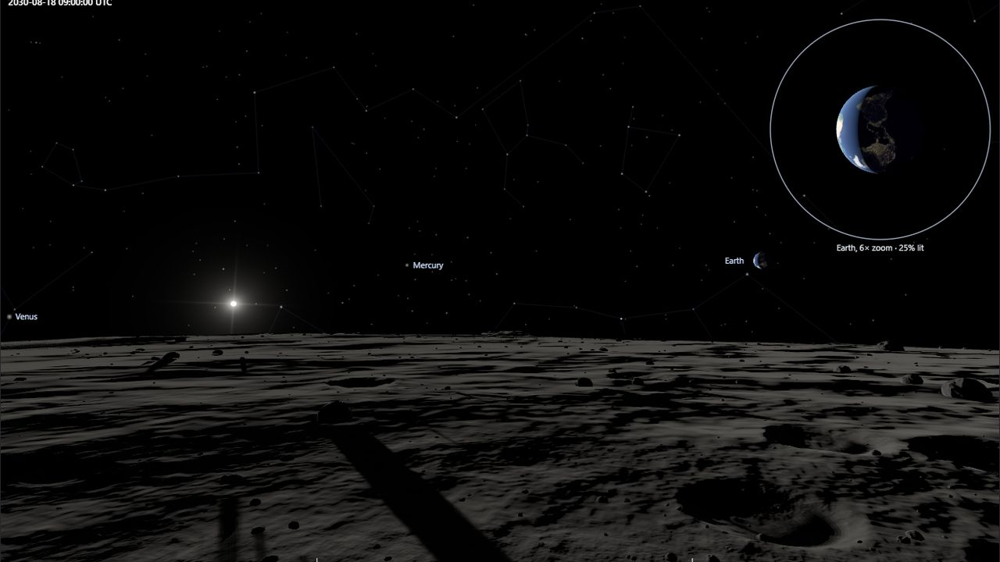
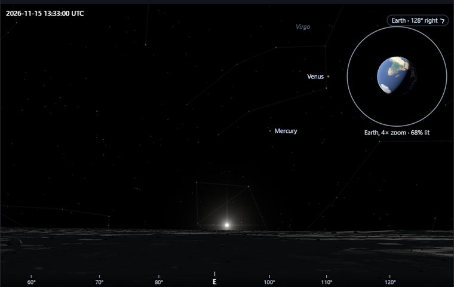

What it found, and what it shows
A base site, rover trips, map layers and a story
StarHab lunar base site: Malapert massif crest

82 %
Sun: mean share of its disk in view
98 %
Earth: mean share in view; never fully hidden
7 days
Longest night
85.97° S, 2.29° W · 2030–2040 · 10 m mast · best of 80,648 polar points

Rover trips
The fastest drivable route between stops. The travel time is coloured like traffic: green, orange or red.

Map layers
NASA's permanently shadowed regions, where ice may hide, and the ground lit most of the time. Plus base maps and contour lines.

Beresheet, right now
The sky at the crash site of Israel's first Moon mission (2019), where its tardigrades lie.
MoonatScreenshots are real renders of the live app.